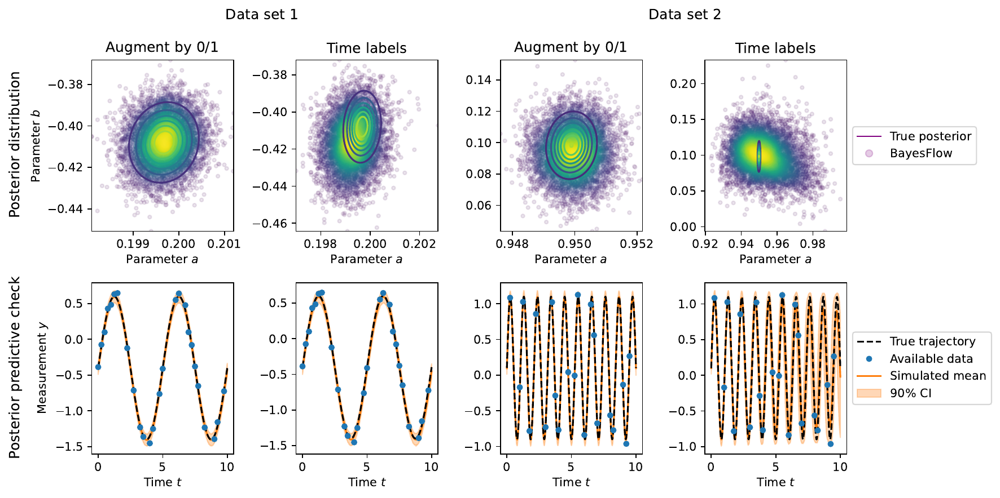
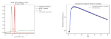

Overview
- Quantitative systems biology
- Amortized inference
- Missing data
- Mixed-effects modeling
Biological processes are complicated
Fröhlich et al., Cell Systems, 2018, and Jagiella et al., Cell Systems, 2017
Model types

based on Hasenauer et al., Coupl. Sys. 2015
The inverse problem


Software

Amortized inference
Fitting a model to many datasets?
In brief
- Classical (simulation-based) parameter estimation is case-based + slow + approximate
- What if we want to fit the same model to multiple datasets?
- Learn a global estimator for the probabilistic mapping from data to parameters
- Once trained, amortize inference on arbitrarily many datasets
- Embed data via summary statistics model
Generative models
generate new data instances, $x\sim\pi(X|Y=y)$
from: Kingma et al., NeurIPS 2019
e.g.: GANs, VAEs, Flows
Normalizing flows
generative models based on an invertible transformation
Let $z\sim\mathcal{N}(0, I)$ and $f: z\mapsto x$ bijective.
Then via change of variable,s the pdf of $x=f(z)$ is given as
$$p_x(x) = p_z(f^{-1}(x))\cdot|\text{det}(\tfrac{df^{-1}}{dx}(x))|.$$
- in training, transform data points to simple distribution
- trained via negative log-likelihood
- afterwards, generate samples via $f^{-1}(z)$ with $z\sim\mathcal{N}(0,I)$
Posterior learning
- parameters $\theta$
- observations $x$
- forward model $x\sim p(x|\theta) \Leftrightarrow x = g(\theta,\xi)$ with $\xi\sim p(\xi)$
- Bayesian posterior $p(\theta|x) \propto p(x|\theta)p(\theta)$
- aim: find a NF $p_\phi(\theta|x) \approx p(\theta|x)$ $\forall \theta,x$
The method
Parameterize $p_\phi$ in terms of a cINN given via a bijective
$$f_\phi:\mathbb{R}^D\rightarrow\mathbb{R}^D,\quad\theta\mapsto z,$$
which implements a normalizing flow between $\theta$ and a Gaussian latent variable
$z$,
$$\theta\sim p_\phi(\theta|x) \Leftrightarrow \phi = f^{-1}_\phi(z; x)\quad\text{with}\quad
z\sim\mathcal{N}_D(z|0,I).$$
Seek neural network parameters $\hat\phi$ that minimize the KL divergence between true and approximate posterior $\forall x$
Seek neural network parameters $\hat\phi$ that minimize the KL divergence between true and approximate posterior $\forall x$
The method
\begin{equation*}
\begin{split}
\hat\phi &= \arg\min_\phi\mathbb{E}_{p(x)}[\text{KL}(p(\theta|x)\!\mid\mid\!
p_\phi(\theta|x))]\\
&= \arg\max_\phi\iint p(x,\theta)\log p_\phi(\theta|x)dxd\theta\\
&= \arg\max_\phi\iint p(x,\theta)(\log p(f_\phi(\theta;x)) + \log |\det J_{f_\phi}|)dxd\theta
\end{split}
\end{equation*}
Approximate via Monte-Carlo sample:
\begin{equation*}
\begin{split}
\hat\phi &= \arg\min_\phi\frac 1 M\sum_{m=1}^M(-\log p(f_\phi(\theta^{(m)};x^{(m)})) - \log
|\det
J_{f_\phi}^{(m)}|\\
&= \arg\min_\phi\frac 1 M\sum_{m=1}^M\left(\frac{|f_\phi(\theta^{(m)};x^{(m)})|_2^2}{2} - \log
|\det
J_{f_\phi}^{(m)}|\right)
\end{split}
\end{equation*}
Learn summary statistics
If data $x_{1:N}$ are high-dimensional: Jointly learn a summary network $\tilde x =
h_\psi(x_{1:N})$,
giving
the objective
$$
\hat\phi,\hat\psi = \arg\max_{\phi,\psi)}\mathbb{E}_{p(x,\theta,N)}[\log
p_\phi(\theta|h_\psi(x_{1:N})]
$$
with Monte-Carlo estimate
$$
\hat\phi,\hat\psi = \arg\min_{\phi,\psi}\frac 1 M
\sum_{m=1}^M\left(\frac{|f_\phi(\theta^{(m)};h_\psi(x_{1:N}^{(m)})|_2^2}{2} -
\log|\det(J_{f_\phi}^{(m)})|\right)
$$
Amortized inference via INNs
you have to solve many similar problems? amortize the solution!
based on: Radev et al., 2021
Training and inference
Training phase:
Inference phase:
- create plenty of synthetic data $(y_i,\theta_i)\sim\pi(y,\theta)$
- train a cINN in forward mode
Inference phase:
- sample many latent $z_i\sim\pi(z)$
- run cINN backwards, $\theta_i = g(z_i; y_\text{obs}) \sim \pi(\theta|y_\text{obs})$
- fast + accurate amortized simulation-based Bayesian inference
Missing data
How to handle missing data in amortized inference?
Problem: INN cannot interpret the data
 (besides iid + time-series data of heterogeneous length)
(besides iid + time-series data of heterogeneous length)
Can we just impute missing values?


Inappropriate imputation can lead to biased results

There are no free data
Imputation means that instead of working with available data $x$, we try to reconstruct the full
data $\bar
x$,
and estimate parameter probabilities $\pi(\theta|\bar x)$ instead of $\pi(\theta|x)$.
However, the true full data are unknown, therefore we need to take uncertainty in $\bar x$ into
account,
considering a full distribution of values $\pi(\bar x|x)$.
We must either make up a distribution (introducing a bias), or use a faithful approximation
$p(\bar x|x) = \pi(\bar x|x)$ where $\pi(\bar x|x)\pi(x) = \pi(\bar x, x)$.
However, if we integrate out over all possible realizations of full data, we obtain
$\int \pi(\theta|\bar x)\pi(\bar x|x)d\bar x = \pi(\theta|x)$ (or similarly
$\pi(\theta|x,\tau)$).
TLDR: With correct uncertainty quantification (which is hard), we just recover the same posterior.
Encode missing data
All approaches perform well on simple test problem

Binary indicator augmentation more robust for ambiguous fill-in values

Positional encoding not robust on oscillatory data

Variable dataset size as a special case of missing data
 Augment by 0/1 improves performance due to better cost function approximation with individual-specific
missingness
Augment by 0/1 improves performance due to better cost function approximation with individual-specific
missingness
Scales to complex dynamics

Able to unravel parameter-dependent missingness

Mixed-effects models
Mixed-Effects Modeling

| dynamical model: | $\dot x = f(x,\theta)$ |
| observables: | $y = h(x, \theta) + \varepsilon$ |
| parameters: | $\theta = A\alpha + B\beta,\quad\beta\sim\mathcal{N}(0,\Sigma)$ |
Problem
- estimate parameters: maximize over $\alpha$ and $\Sigma$ the likelihood of data $y_\text{obs}$, marginalized over random effects $\beta$, $$\pi(y_\text{obs}|\alpha,\Sigma) = \prod_i\int\color{red}{\pi(y_i|\theta)}\pi(\theta|\alpha,\Sigma)d\theta$$
- problem:
evaluating these (high-dim) integrals is challenging,
especially with many individuals

An amortized approach
- idea: rewrite in terms of an individual-specific posterior: $$\begin{split}\pi(y_\text{obs}|\alpha,\Sigma) &= \prod_i\pi(y_i)\int\pi(\theta|y_i)\frac{\pi(\theta|\alpha,\Sigma)}{\pi(\theta)}d\theta \\&= \prod_i\pi(y_i)\mathbb{E}_{\theta\sim\color{red}{\pi(\theta|y_i)}}\left[\frac{\pi(\theta|\alpha,\Sigma)}{\pi(\theta)}\right]\end{split}$$
- ... and approximate the posterior using a neural density estimator trained on synthetic data!
Evaluation



- INN fits the posterior well
- after training once ($h$), the optimization is very fast ($s-min$)
- allows to easily test hypotheses
- allows considering stochastic models
- even uncertainty analysis easily possible
Outlook
Outlook
- applications in pharmacology and single-cell biology
- mechanistic insights to inform drug therapy
- combine with equation learning
- integrate image and tabular data in one framework
- large-scale modeling
- federated learning
- software
Thanks! Questions?
Backup
Illustration of adjoint-hierarchical evaluation scheme

from: Schmiester, Schälte et al., Bioinformatics 2020
Convergence of standard and hierarchical optimization
from: Schmiester, Schälte et al., Bioinformatics 2020
Computational efficiency of standard and hierarchical optimization
from: Schmiester, Schälte et al., Bioinformatics 2020
Integration of heterogeneous data using hierarchical optimization
from: Schmiester, Schälte et al., Bioinformatics 2020
github.com/icb-dcm/pyabc
Klinger et al., Bioinformatics 2018 and Schälte et al., JOSS 2022
# specify problem and parallelization
abc = ABCSMC(model, prior, distance, sampler)
# pass data
abc.new(db, data)
# run it
abc.run()

Parallel backends: 1 to 1,000s cores
Parallelization strategies
Klinger et al., CMSB Proceedings 2017
fitmulticell.gitlab.io
a platform for modeling, simulation and inference for multi-scale multi-cellular models

Starruß et al., Bioinformatics 2014; Alamoudi et al., NIC Proc. 2022; Alamoudi et al.,
bioRxiv
2023
Application example

ABC worked where many other methods had failed.
Application example

ABC worked where many other methods had failed.

Uncertainty-aware predictions, easy data integration.
Define summary statistics

- 400 cores
- 2 days
- 1.8e6 simulations
Theorem (Exact inference)
Using the modified kernel with $c>\pi(\bar y_\text{obs}|y,\theta)$ $\forall y,\theta$, we sample from the true posterior \[\pi_\text{ABC}(\theta | \bar y_\text{obs}) = \pi(\theta | \bar y_\text{obs}) \propto \int\pi(\bar y_\text{obs}|y,\theta)p(y|\theta)\mathop{dy}\cdot\pi(\theta)\] assuming noisy data $\bar y_\text{obs}\sim\pi(\bar y|y,\theta)$.
- non-trivial noise allows to do exact likelihood-free inference
- applicable to stochastic models
- parameterized noise model
Theorem (Optimal summary statistics)
[...] Given $\lambda:\mathbb{R}^{n_\theta}\rightarrow\mathbb{R}^{n_\lambda}$ such that $\mathbb{E}_{\pi(\theta)}[|\lambda(\theta)|]<\infty$, define summary statistics as the conditional expectation $$s(y) :=\mathbb{E}[\lambda(\Theta)|Y=y]=\int \lambda(\theta)\pi(\theta|y)d\theta.$$ Then, it holds $\left\lVert{\mathbb{E}_{\pi_{\text{ABC},\varepsilon}}[\lambda(\Theta)|s(y_\text{obs})] - s(y_\text{obs})}\right\rVert \leq \varepsilon$, and therefore \begin{equation}\label{eq:sreg_conv} \lim_{\varepsilon\rightarrow 0}\mathbb{E}_{\pi_{\text{ABC},\varepsilon}}[\lambda(\Theta)|s(y_\text{obs} )]=\mathbb{E}[\lambda(\Theta)|Y=y_\text{obs}]. \end{equation}In practice: Train regression model $s: y \mapsto \lambda(\theta) = (\theta^1,\ldots,\theta^k)$.
Scale-normalizing and outlier-robust adaptive distances
- Integrate heterogeneous data scales via a scale-normalizing adaptive distance $$d(y,y_\text{obs}) = \left(\sum_{i_y}(r_{i_y} \cdot (y_{i_y} - y_{\text{obs},{i_y}}))^2\right)^{1/2}$$ with weights adjusted in every ABC-SMC generation (Prangle, Bay. Ana., 2017)
- Problem: outliers can severely affect results
- Use robust norms (e.g. L1) with adaptive weights to normalize scales and down-weight outliers